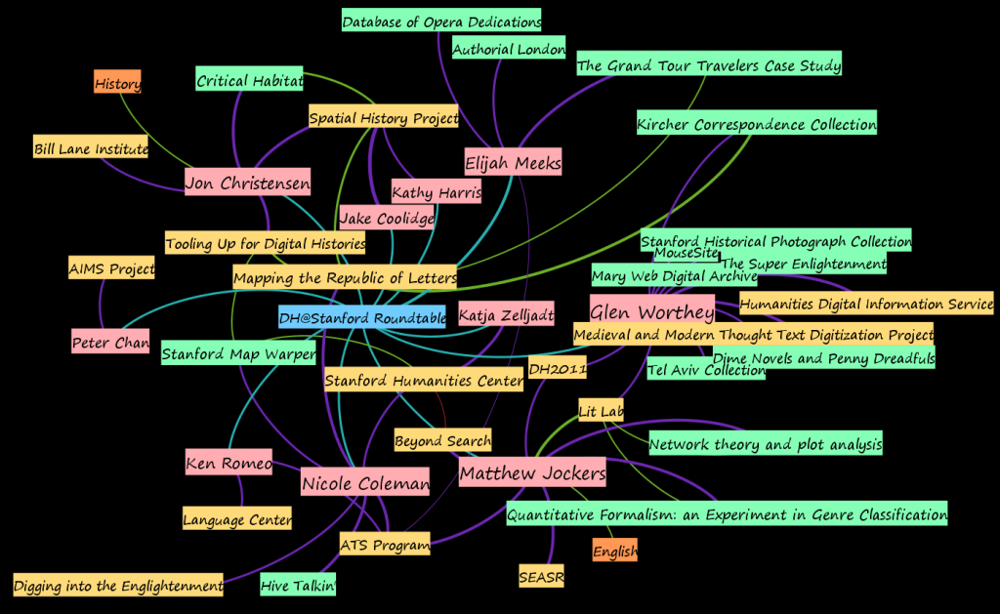

I had the opportunity to present the DH@Stanford graph to my colleagues, yesterday, during our monthly Digital Humanities roundtable, where along with spirited discussion I met Katja Zelljadt, the incoming director of the Stanford Humanities Center, as well as Jake Coolidge, the new Geospatial Historian at the Spatial History Project. Along with the new folks, there were enough old hats to make for an impressive visual summation:


The 1/12 DH roundtable discussion as a node (blue) with the attendees (pink) and their projects (yellow) and products (green). As with the full graph, the gaps are notable and, hopefully, motivational.
The roundtable discussion at Stanford is held in the President’s Lounge and is fully catered by the local, slow-food coop/4-star French restaraunt, “Le Fevre”. It’s hosted such luminaries as… Well, actually it’s a rather informal monthly get-together at the Humanities Center spurred on by the head of the library as a way for folks working on or interested in the digital humanities (even if they, like all of us, have issues with both the term and the concept) and my own presentation of the half-built DH@Stanford graph was suggested by Glen Worthy (in the pink on the right) the day before.
In other words, what makes the above network all the more impressive is that it’s a roughly random sample of the Stanford DH ecosystem. And it represents digital environmental history, text analysis, born-digital archiving, language, education and a healthy dose of respect for traditional methods and practices. I’d wager that any one of the folks who just happened to show up would not cause the kind of consternation expressed by Cathy Davidson on the uneven quality of DH candidates.
The apparent distress and antagonism engendered by the debate over the constitution of the digital humanities at MLA 11 will likely continue and grow, and make for an interesting time at DH11. Still, regardless of how the Digital Humanities changes as a field or discipline or category, I can only hope that Stephen Ramsay’s recent tweet remains correct:
I keep hearing this about “evolving ecosystems” but Stanford is an apex predator compared to DH at small libarts colleges.